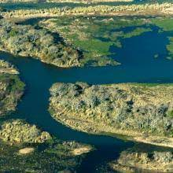

El delta del Río Paraná con 14 000 km² y una longitud de 320 km, nace a la altura del puerto y ciudad de Diamante, provincia de Entre Ríos en donde concluye el predelta. Se divide en tres grandes regiones: el Delta Superior (desde Diamante, hasta Villa Constitución, provincia de Santa Fe), el Delta Medio (desde Villa Constitución hasta Puerto Ibicuy, provincia de Entre Ríos) y el Delta Inferior o en formación (desde Puerto Ibicuy hasta la desembocadura en el gran estuario llamado Río de la Plata todas estas zonas en Argentina). El Delta del Paraná es, en sentido geográfico, parte de la Mesopotamia y está considerado como uno de los deltas más grandes del mundo. En lo que respecta a su bioma, a pesar de su ubicación meridional, la presencia de grandes espejos de agua y la escasa altitud produce un microclima que favorece la proliferación de especies animales y vegetales que recuerdan a latitudes tropicales (por ejemplo, el brazo deltaico llamado Paraná de las Palmas lleva este nombre porque a la llegada de los europeos en el siglo xvi proliferaban palmerales de pindó).
Entre las especies vegetales más comunes se encuentran árboles como el sauce, el ceibo, el aliso de río, el coronillo y el espinillo, sobre los cuales crecen epífitas como los claveles del aire y las barbas de viejo. Las áreas parcialmente inundables tienen una población de pastos altos, resistentes a periódicas inundaciones, de bajo valor nutritivo para el ganado. Como palustres en las aguas del río o estancadas crecen el junco y la espadaña. Flotando en las aguas del río y de los bañados abundan las plantas acuáticas, como camalotes y repollitos de agua. En las márgenes de los principales brazos del río Paraná en su sección deltaica prosperaban las «palmas» (palmeras) de la especie pindó (Syagrus romanzoffiana) pero éstas han sido taladas hasta su casi total extinción desde fines del siglo xix. Desde fines de siglo xix el ser humano ha introducido especies alóctonas que se han aclimatado muy bien: álamos, ciruelos, duraznos, diversas especies de cítricos, ramio e incluso coníferas. También el formio, el mimbre y el pecán que representan fuentes de trabajo para los habitantes de las islas.
Hasta principios del siglo xx hubo en el Delta yaguares (onzas), que dieron su nombre al río Tigre y al partido homónimo. Han sido cazados hasta su extinción. Lo mismo ha ocurrido con los yacarés, pumas, arirays, pecaríes, curiyues y aguaraguazúes. En los lugares más apartados de la presencia humana sobreviven todavía algunos ciervos de los pantanos, especie autóctona de color pardo, con patas negras y círculos blancos alrededor de los ojos. Hay allí también carpinchos, coipos (pseudonutria), lobitos de río (una especie de nutria genuina) y algunos gatos monteses y algunos zorros grises. Hay numerosas especies de aves, como el zorzal, el biguá, el martín pescador, el benteveo, la calandria, el boyero y la pava de monte. En otros tiempos hubo abundantes bandadas de cisnes y papagayos, pero se han extinguido. Son bastante comunes algunos reptiles y anfibios, como culebras, diversas especies de sapos, ranas y escuerzos. En las aguas calmas del Delta encuentran refugio peces como el dorado, el surubí, el bagre, el patí, la tararira, la boga, el sábalo y la raya. El delfín franciscano (Pontoporia blainvillei), del estuario del Río de la Plata, ha sido avistado a veces en el delta del Paraná y, con dudas, en el tramo inferior del río Paraná.